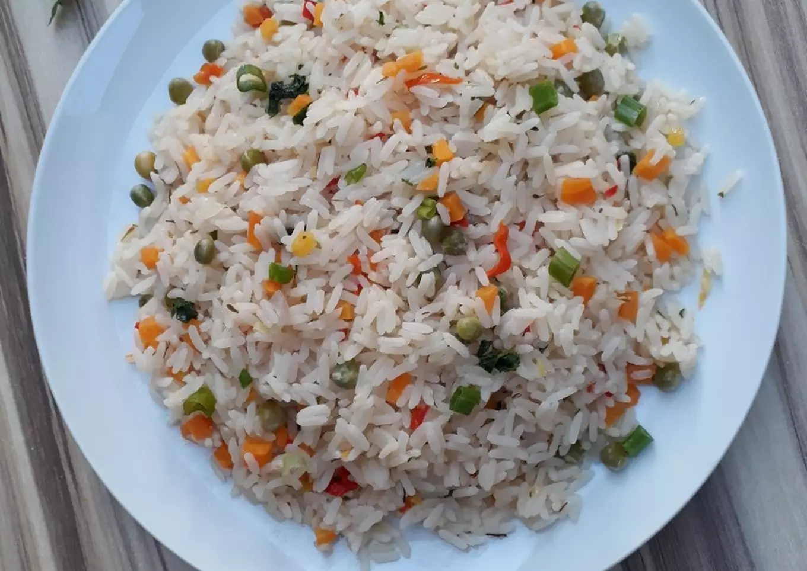

Braised Rice

Description
This rice is special in that it isnt cooked with conventional ingredients like tomatoe, the rice is instead braised while an assortmentvof salads are added to complement it.
Ingredients
- Rice
- Carrots
- Green Peas
- Green Peppers
Steps
- Wash the rice and carrots
- Chop the carrots,green peppers and peas
- Pour the rice into a pot
- Set the pot over a low burning flame